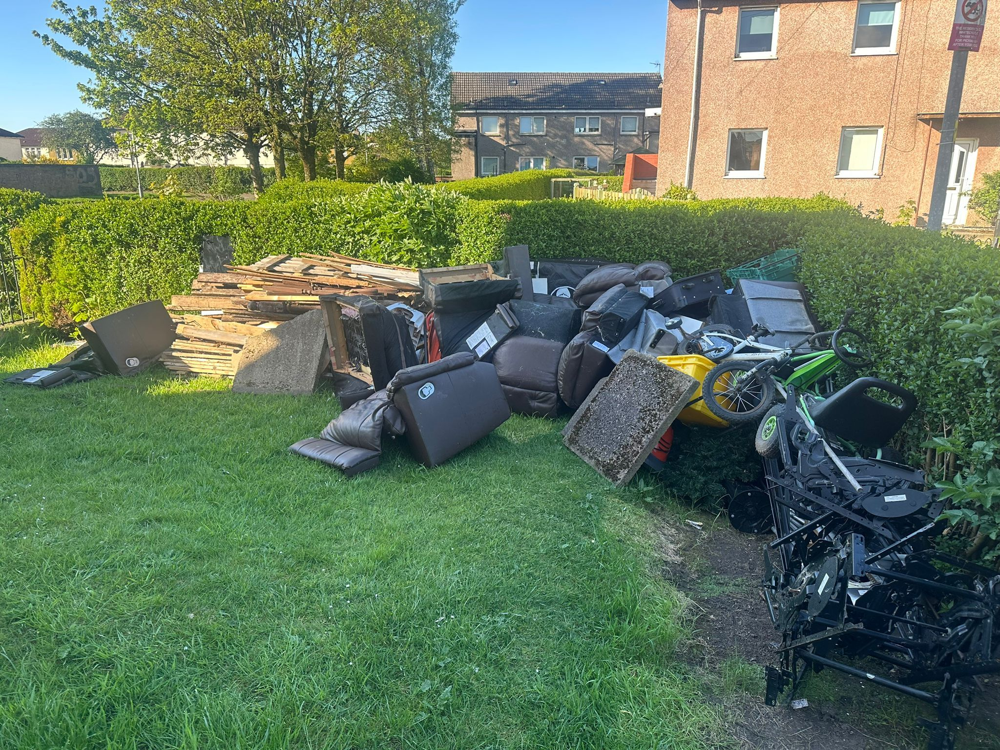
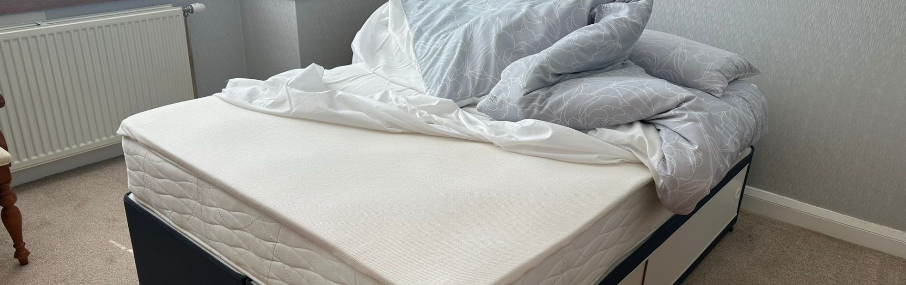
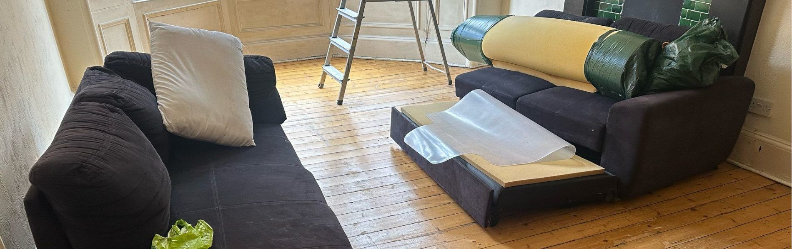
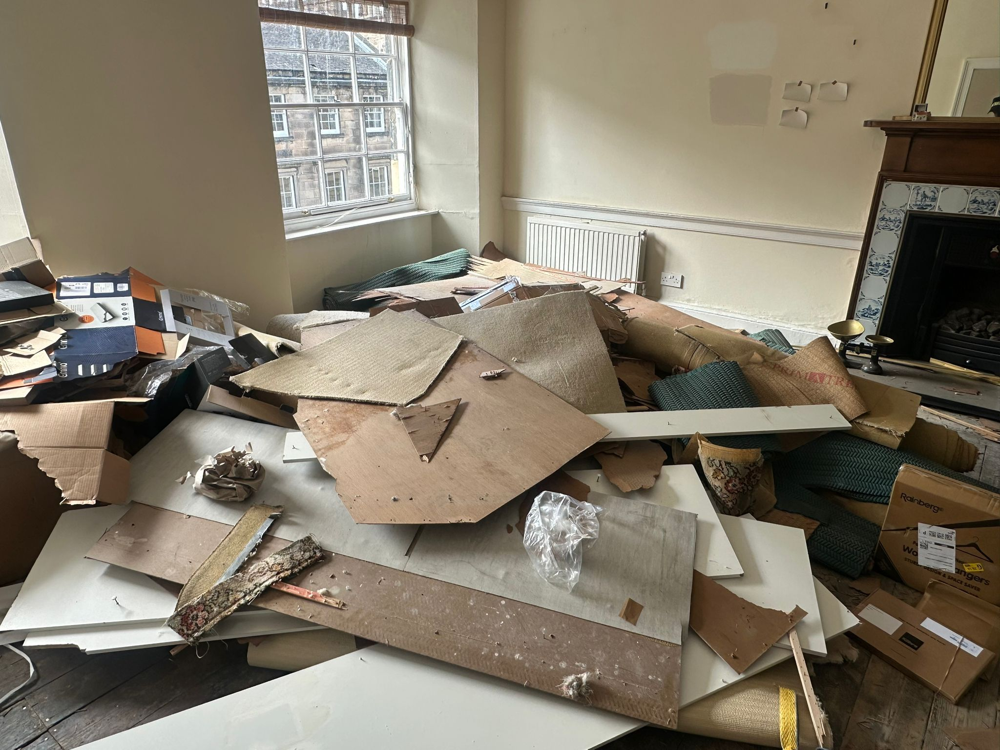
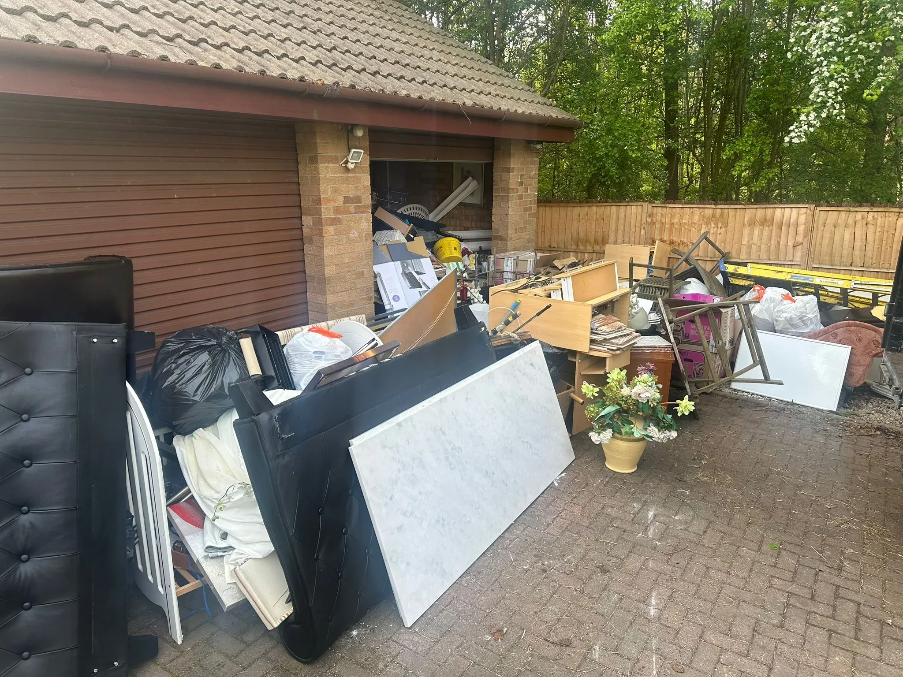
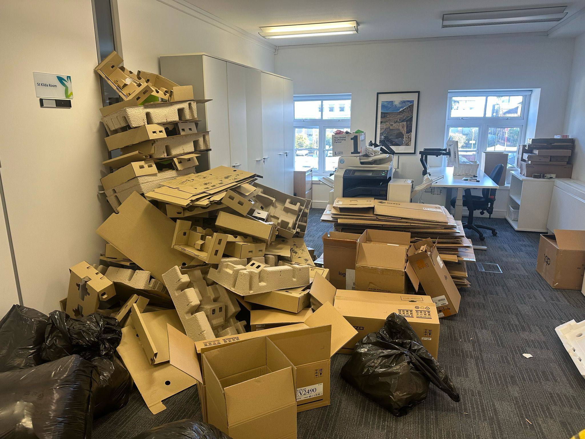
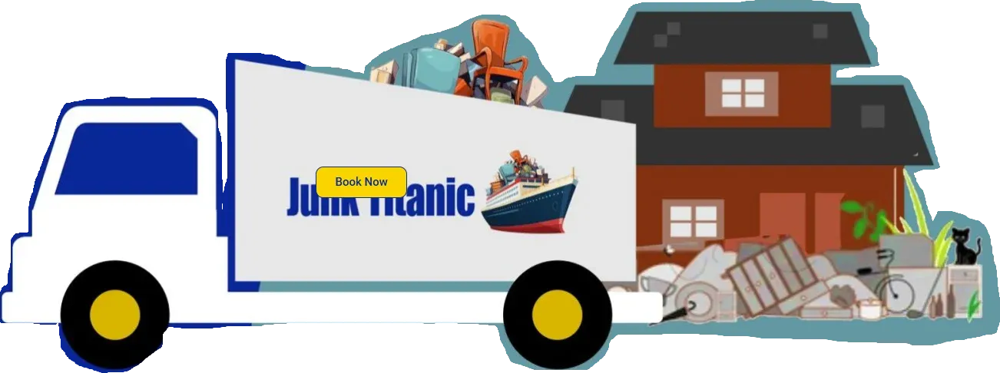

Stirling city
City Centre · Riverside · Top of the Town · Raploch · Cornton · Causewayhead
Local service · Stirling & Forth Valley
House, garden and office clearances across Stirling, Bridge of Allan, Dunblane, Bannockburn and the wider Forth Valley — with same-day collection where available and upfront, all-inclusive pricing.

Local, not national
Junk Titanic regularly serves homeowners, landlords and businesses across Stirling and the Forth Valley — from the city centre and Riverside out to Bridge of Allan, Dunblane, Bannockburn, St Ninians, Causewayhead and Cambusbarron. Whether you're clearing a flat near the castle, emptying a garage in Bannockburn, or preparing a rental property for new tenants, our uniformed crew will collect, load and sweep up — often the same day.
Stirling's mix of older tenement flats, modern estates and rural properties means we're used to every access scenario: tight stairs, restricted parking, long driveways and everything in between. If you're unsure whether we can reach an item, send us a photo — we'll tell you straight.

Services in Stirling
Tailored to the job, wherever it is in the Forth Valley.

Full or partial clears — moving, downsizing, bereavement or rental turnover.
Learn more
Bulky items, appliances, furniture and general household junk.
Learn more
Sheds, decking, fencing, green waste and outdoor clutter.
Learn more
Desks, IT, confidential shredding, fit-out debris — minimal disruption.
Learn moreCoverage
City Centre · Riverside · Top of the Town · Raploch · Cornton · Causewayhead
Bridge of Allan · Dunblane · Bannockburn · St Ninians · Cambusbarron · Fallin
Falkirk · Alloa · Grangemouth · Menstrie · Tullibody · Clackmannanshire
Not sure if we cover your street? Call us or send a message on WhatsApp.

Local answers
No — Stirling is within our standard Central Belt coverage. Pricing is by volume, with a minimum charge for very small loads. Send a photo for an exact quote.
Yes. We routinely clear flats with tight stairs and restricted parking. Send us a photo and mention any access restrictions — we'll plan the crew accordingly.
Often, yes. Call 07825 646222 and we'll tell you the earliest slot. Same-day is subject to schedule and location.
Yes — we regularly help landlords and letting agents clear properties between tenants, including full house clearances and furniture removal. Call us to discuss recurring or short-notice jobs.
We collect green waste, hedge clippings, fence panels, decking, sheds and old garden furniture. If you have large quantities of soil, rubble or heavy building materials, please call first so we can confirm access and pricing.
Local collection
Send a photo on WhatsApp and we'll reply with an upfront price.